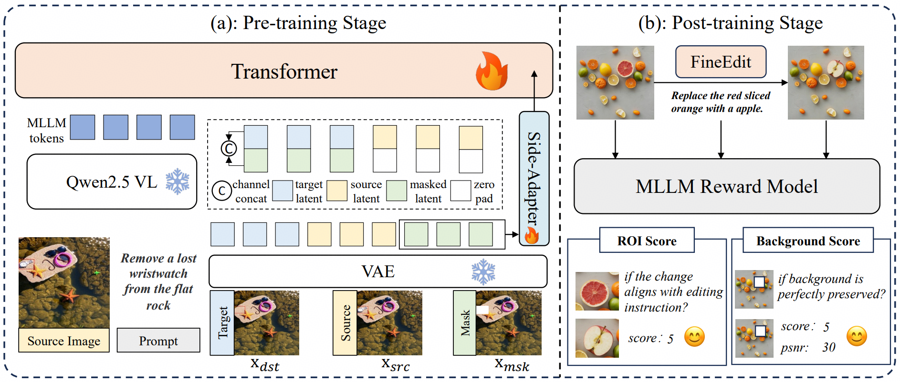

Method Overview

Overview of FineEdit framework, which includes two training stages: (a) Pre-training stage establishes multi-level spatial priors using early and deep fusion. (b) Post-training stage applies reinforcement learning with a novel decoupled reward function.